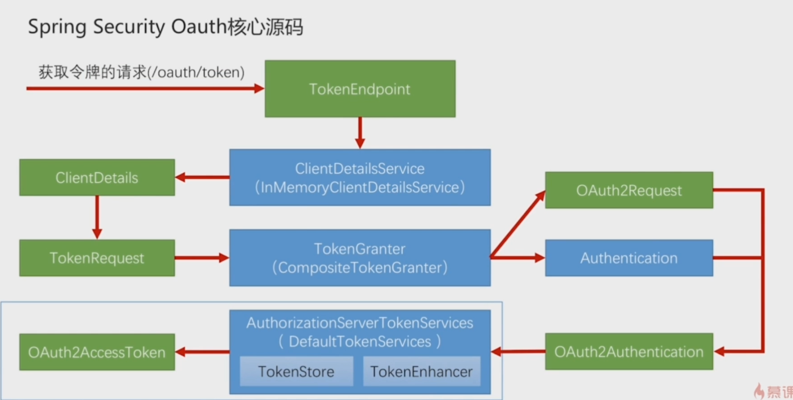
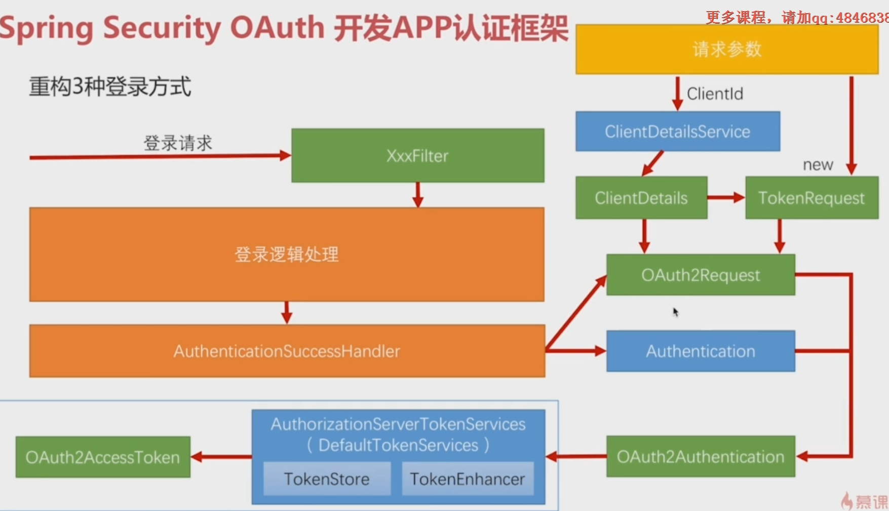
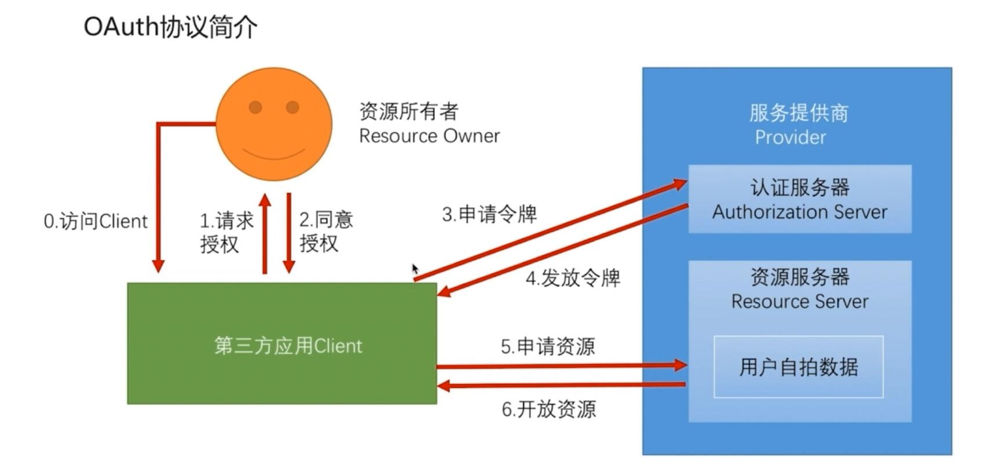
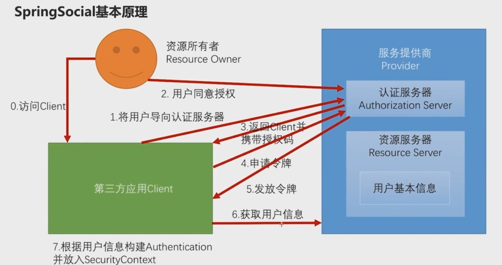
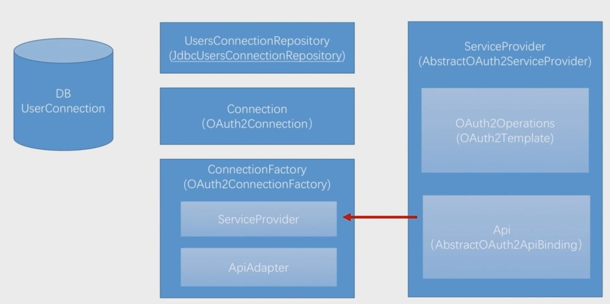
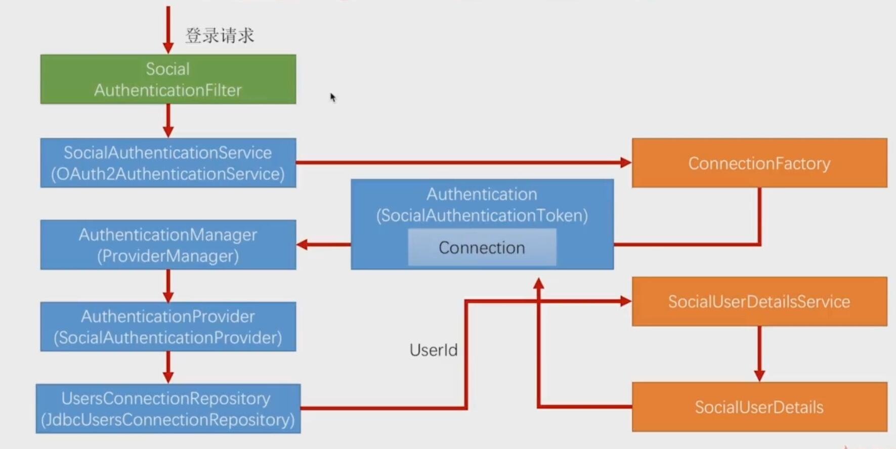

Java
PS:待开发中。。。。
作者网页：www.jcohy.com
我的学习笔记，记录学习过程中的笔记以及遇到的问题,以及我的一些经验总结。如果出现链接失效,或者想知道更多的内容等情况可以提交 Issues 提醒我修改相关内容。
- SpringBoot 实现认证服务器(SpringBoot自带的认证实现)只需要两个注解
@Configuration和@EnableAuthorizationServer@Configuration @EnableAuthorizationServer public class ImoocAuthorizationServerConfig{ }1.首先，需要请求获取授权码。请求地址：
oauth/authorize。需要传递几个参数
参数 是否必须 描述 response_type 是 值必须为code client_id 是 此值在Springboot启动过程中在控制台打印 redirect_url 可选 重定向的地址 scope 可选 授权范围，可有自己定义 state 可选 授权范围，可有自己定义 client_id和client_secret可由security.0auth2.client.clientId和security.0auth2.client.secret在配置文件中指定2.拿到授权码后，需要到
需要在头部加入：authorization：讲id和secret填进去/oauth/token换取令牌，需要传递几个参数
请求头 是否可选 描述 grant_type 必填 authorization_code code 必填 获取到的授权码 redirect_url 必填 client_id 必填 SpringBoot 实现资源服务器(SpringBoot自带的资源实现)只需要两个注解
@Configuration和@EnableResourceService源码分析:绿色代表实体类，蓝色代表接口

TokenEndPoint:整个流程的入口点，可以理解为一个Controller
ClientDetails:封装了请求中应用的信息
TokenRequest:封装了请求中其他参数的信息，同时也包括ClientDetails
ClientDetailsService:读取地方应用的信息，这些信息都会被读取到ClientDetails中
TokenGranter:令牌生产者，对应四种不同授权模式的实现
OAuth2Request:ClientDetails和TokenRequest的整合
Authentication:封装当前授权用户的一些信息
Oauth2Authentication:
AuthorizationServerTokenServices:生成令牌
OAuth2AccessToken:下面来分析下具体源码的实现，从
TokenEndPoint开始public class TokenEndpoint extends AbstractEndpoint { ..... @RequestMapping(value = "/oauth/token", method=RequestMethod.POST) public ResponseEntity<OAuth2AccessToken> postAccessToken(Principal principal, @RequestParam Map<String, String> parameters) throws HttpRequestMethodNotSupportedException { if (!(principal instanceof Authentication)) { throw new InsufficientAuthenticationException( "There is no client authentication. Try adding an appropriate authentication filter."); } //首先获取clientId String clientId = getClientId(principal); //获取第三方应用的详细信息 ClientDetails authenticatedClient = getClientDetailsService().loadClientByClientId(clientId); //创建TokenRequest TokenRequest tokenRequest = getOAuth2RequestFactory().createTokenRequest(parameters, authenticatedClient); if (clientId != null && !clientId.equals("")) { // Only validate the client details if a client authenticated during this // request. if (!clientId.equals(tokenRequest.getClientId())) { // double check to make sure that the client ID in the token request is the same as that in the // authenticated client throw new InvalidClientException("Given client ID does not match authenticated client"); } } if (authenticatedClient != null) { oAuth2RequestValidator.validateScope(tokenRequest, authenticatedClient); } if (!StringUtils.hasText(tokenRequest.getGrantType())) { throw new InvalidRequestException("Missing grant type"); } //是否是简化模式，不支持 if (tokenRequest.getGrantType().equals("implicit")) { throw new InvalidGrantException("Implicit grant type not supported from token endpoint"); } if (isAuthCodeRequest(parameters)) { // The scope was requested or determined during the authorization step if (!tokenRequest.getScope().isEmpty()) { logger.debug("Clearing scope of incoming token request"); tokenRequest.setScope(Collections.<String> emptySet()); } } if (isRefreshTokenRequest(parameters)) { // A refresh token has its own default scopes, so we should ignore any added by the factory here. tokenRequest.setScope(OAuth2Utils.parseParameterList(parameters.get(OAuth2Utils.SCOPE))); } OAuth2AccessToken token = getTokenGranter().grant(tokenRequest.getGrantType(), tokenRequest); if (token == null) { throw new UnsupportedGrantTypeException("Unsupported grant type: " + tokenRequest.getGrantType()); } return getResponse(token); } /** * @param principal the currently authentication principal * @return a client id if there is one in the principal */ protected String getClientId(Principal principal) { Authentication client = (Authentication) principal; if (!client.isAuthenticated()) { throw new InsufficientAuthenticationException("The client is not authenticated."); } String clientId = client.getName(); if (client instanceof OAuth2Authentication) { // Might be a client and user combined authentication clientId = ((OAuth2Authentication) client).getOAuth2Request().getClientId(); } return clientId; } }OAuth2AccessToken的实现类DefaultOAuth2AccessToken就是最终在控制台得到的token序列化之前的原始类
public class DefaultOAuth2AccessToken implements Serializable, OAuth2AccessToken { private static final long serialVersionUID = 914967629530462926L; private String value; private Date expiration; private String tokenType = BEARER_TYPE.toLowerCase(); private OAuth2RefreshToken refreshToken; private Set<String> scope; private Map<String, Object> additionalInformation = Collections.emptyMap(); //getter,setter } @org.codehaus.jackson.map.annotate.JsonSerialize(using = OAuth2AccessTokenJackson1Serializer.class) @org.codehaus.jackson.map.annotate.JsonDeserialize(using = OAuth2AccessTokenJackson1Deserializer.class) @com.fasterxml.jackson.databind.annotation.JsonSerialize(using = OAuth2AccessTokenJackson2Serializer.class) @com.fasterxml.jackson.databind.annotation.JsonDeserialize(using = OAuth2AccessTokenJackson2Deserializer.class) public interface OAuth2AccessToken { public static String BEARER_TYPE = "Bearer"; public static String OAUTH2_TYPE = "OAuth2"; /** * The access token issued by the authorization server. This value is REQUIRED. */ public static String ACCESS_TOKEN = "access_token"; /** * The type of the token issued as described in <a href="http://tools.ietf.org/html/draft-ietf-oauth-v2-22#section-7.1">Section 7.1</a>. Value is case insensitive. * This value is REQUIRED. */ public static String TOKEN_TYPE = "token_type"; /** * The lifetime in seconds of the access token. For example, the value "3600" denotes that the access token will * expire in one hour from the time the response was generated. This value is OPTIONAL. */ public static String EXPIRES_IN = "expires_in"; /** * The refresh token which can be used to obtain new access tokens using the same authorization grant as described * in <a href="http://tools.ietf.org/html/draft-ietf-oauth-v2-22#section-6">Section 6</a>. This value is OPTIONAL. */ public static String REFRESH_TOKEN = "refresh_token"; /** * The scope of the access token as described by <a href="http://tools.ietf.org/html/draft-ietf-oauth-v2-22#section-3.3">Section 3.3</a> */ public static String SCOPE = "scope"; ... }一个典型的样例token响应,如下所示，就是上述类序列化后的结果：
{ "access_token":"950a7cc9-5a8a-42c9-a693-40e817b1a4b0", "token_type":"bearer", "refresh_token":"773a0fcd-6023-45f8-8848-e141296cb3cb", "expires_in":27036, "scope":"select" }
TokenGranter:TokenGranter的设计思路是使用CompositeTokenGranter管理一个List列表，每一种grantType对应一个具体的真正授权者，在debug过程中可以发现CompositeTokenGranter 内部就是在循环调用五种TokenGranter实现类的grant方法，而granter内部则是通过grantType来区分是否是各自的授权类型。
CompositeTokenGranterpublic class CompositeTokenGranter implements TokenGranter { private final List<TokenGranter> tokenGranters; public CompositeTokenGranter(List<TokenGranter> tokenGranters) { this.tokenGranters = new ArrayList<TokenGranter>(tokenGranters); } public OAuth2AccessToken grant(String grantType, TokenRequest tokenRequest) { for (TokenGranter granter : tokenGranters) { OAuth2AccessToken grant = granter.grant(grantType, tokenRequest); if (grant!=null) { return grant; } } return null; } public void addTokenGranter(TokenGranter tokenGranter) { if (tokenGranter == null) { throw new IllegalArgumentException("Token granter is null"); } tokenGranters.add(tokenGranter); } }五种类型分别是：
- ResourceOwnerPasswordTokenGranter ==> password密码模式
- AuthorizationCodeTokenGranter ==> authorization_code授权码模式
- ClientCredentialsTokenGranter ==> client_credentials客户端模式
- ImplicitTokenGranter ==> implicit简化模式
- RefreshTokenGranter ==>refresh_token 刷新token专用
AuthorizationServerTokenServicespublic interface AuthorizationServerTokenServices { //创建token OAuth2AccessToken createAccessToken(OAuth2Authentication authentication) throws AuthenticationException; //刷新token OAuth2AccessToken refreshAccessToken(String refreshToken, TokenRequest tokenRequest) throws AuthenticationException; //获取token OAuth2AccessToken getAccessToken(OAuth2Authentication authentication); }在默认的实现类DefaultTokenServices中，可以看到token是如何产生的，并且了解了框架对token进行哪些信息的关联。
@Transactional public OAuth2AccessToken createAccessToken(OAuth2Authentication authentication) throws AuthenticationException { OAuth2AccessToken existingAccessToken = tokenStore.getAccessToken(authentication); OAuth2RefreshToken refreshToken = null; if (existingAccessToken != null) { if (existingAccessToken.isExpired()) { if (existingAccessToken.getRefreshToken() != null) { refreshToken = existingAccessToken.getRefreshToken(); // The token store could remove the refresh token when the // access token is removed, but we want to // be sure... tokenStore.removeRefreshToken(refreshToken); } tokenStore.removeAccessToken(existingAccessToken); } else { // Re-store the access token in case the authentication has changed tokenStore.storeAccessToken(existingAccessToken, authentication); return existingAccessToken; } } // Only create a new refresh token if there wasn't an existing one // associated with an expired access token. // Clients might be holding existing refresh tokens, so we re-use it in // the case that the old access token // expired. if (refreshToken == null) { refreshToken = createRefreshToken(authentication); } // But the refresh token itself might need to be re-issued if it has // expired. else if (refreshToken instanceof ExpiringOAuth2RefreshToken) { ExpiringOAuth2RefreshToken expiring = (ExpiringOAuth2RefreshToken) refreshToken; if (System.currentTimeMillis() > expiring.getExpiration().getTime()) { refreshToken = createRefreshToken(authentication); } } OAuth2AccessToken accessToken = createAccessToken(authentication, refreshToken); tokenStore.storeAccessToken(accessToken, authentication); // In case it was modified refreshToken = accessToken.getRefreshToken(); if (refreshToken != null) { tokenStore.storeRefreshToken(refreshToken, authentication); } return accessToken; }
简单总结一下AuthorizationServerTokenServices的作用，他提供了创建token，刷新token，获取token的实现。在创建token时，他会调用tokenStore对产生的token和相关信息存储到对应的实现类中，可以是redis，数据库，内存，jwt。- 
无论使用那种登录方法，校验成功后都会进入到AuthenticationSuccessfulHandler的实现类里面，而我们要做的是在这个实现类中调用TokenService去产生令牌当作一个返回。
- 第三方登录
三个角色：服务提供商（Provider），资源所有者（Resource Owner），第三方应用（Client）
在标准的OAuth2协议中，1-6步都是固定，只有最后一步，不通的服务提供商返回的用户信息是不同的。Spring Social已经为我们封装好了1-6步。
OAuth协议中的授权模式
授权码模式（authorization code）密码模式（resource owner password credentials）客户端模式(client credentials)简化模式(implicit)第三方应用授权码模式流程
- SpringSocial原理
SpringSocial使用SocialAuthenticationFilter过滤器实现上图的流程，并将这个过滤器加到SpringSecurity的过滤器链上
ServiceProvider：针对每一个服务提供商，都必须提供一个ServiceProvider，继承AbstractOAuth2ServiceProvider这个抽象类，里面实现了最基本的功能
第三方登陆涉及到的类和接口

当两个对象的hashcode相同会发生什么？
因为hashcode相同，所以它们的bucket位置相同，‘碰撞’会发生。因为HashMap使用链表存储对象，这个Entry(包含有键值对的Map.Entry对象)会存储在链表中。如果两个键的hashcode相同，你如何获取值对象？
当我们调用get()方法，HashMap会使用键对象的hashcode找到bucket位置，找到bucket位置之后，会调用keys.equals()方法去找到链表中正确的节点，最终找到要找的值对象。为什么String, Interger这样的wrapper类适合作为键？
可能产生条件竞争(race condition)。因为如果两个线程都发现HashMap需要重新调整大小了，它们会同时试着调整大小。在调整大小的过程中，存储在链表中的元素的次序会反过来，因为移动到新的bucket位置的时候，HashMap并不会将元素放在链表的尾部，而是放在头部，这是为了避免尾部遍历(tail traversing)。如果条件竞争发生了，那么就死循环了。如果两个键的hashcode相同，你如何获取值对象？
因为String是不可变的，也是final的，而且已经重写了equals()和hashCode()方法了。其他的wrapper类也有这个特点。不可变性是必要的，因为为了要计算hashCode()，就要防止键值改变，如果键值在放入时和获取时返回不同的hashcode的话，那么就不能从HashMap中找到你想要的对象。不可变性还有其他的优点如线程安全。